开心果 Need Car · 2025-08-11T06:32:00+08:00 · 微信原文
1、System Reset对RAM区的影响
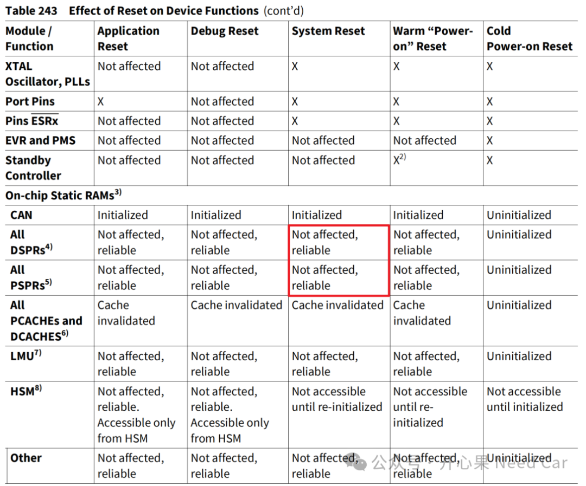
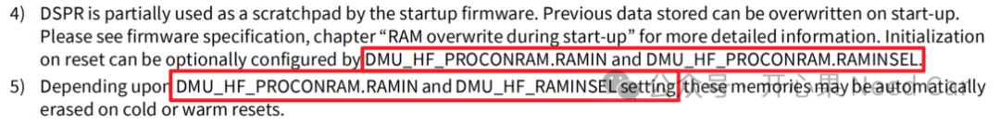
同理，PSPR类似操作。那么，这里的特定寄存器是什么寄存器呢？对于TC3xx，特指UCB17和UCB25，示意如下：
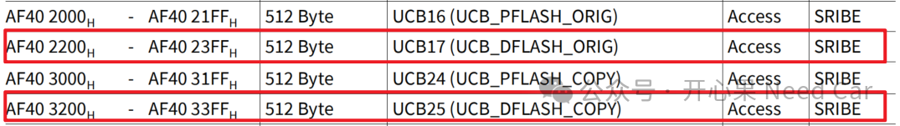
具体分析UCB17，影响RAM区行为的区域是PROCONRANM，示意如下：
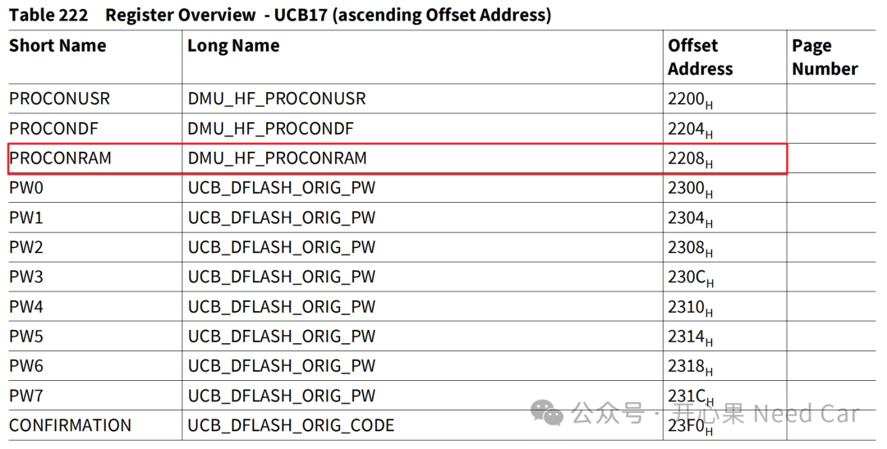
PROCONRANM各个字段的含义如下所示：
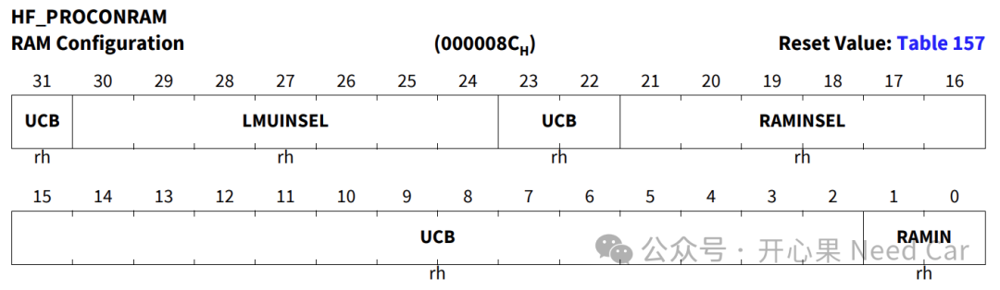
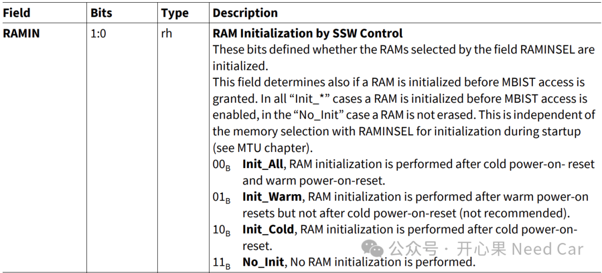
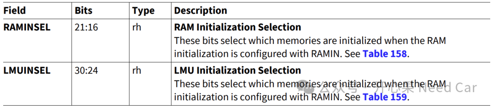
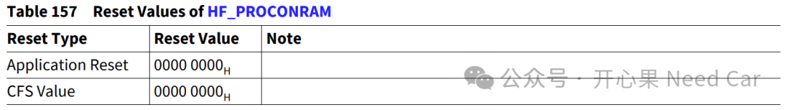
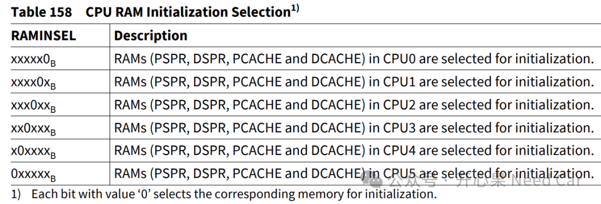
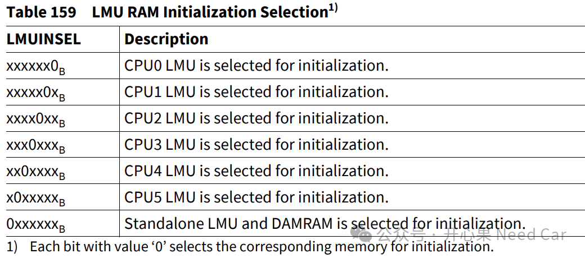
2、系统复位对RAM初始化影响测试
将变量SwapArg放到指定段（段名.mySection），示意如下：
uint32 SwapArg = 0xFF;
SECTIONS{CORE_SEC(.mySection) 0x70001000:{. = ALIGN(4);*(.mySection)}> dsram0}
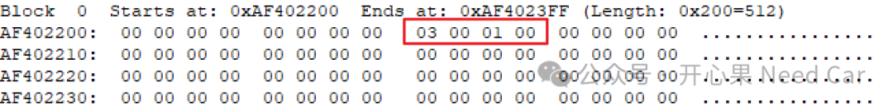
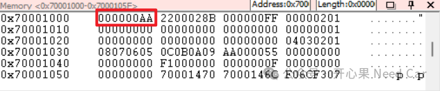
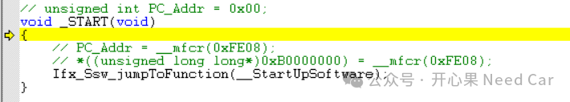
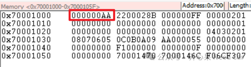
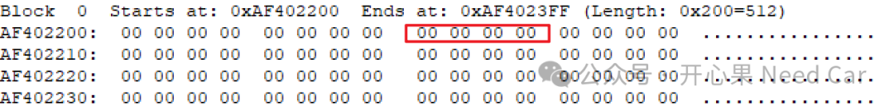
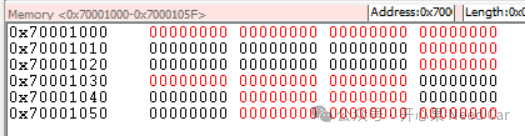
往期精彩回顾